Asif Ahamed Siddique
AI & ML Engineer · Applied Artificial Intelligence
BSc (Hons) Computer Science with Artificial Intelligence
University of Nottingham Malaysia
I'm an aspiring AI & ML Engineer passionate about leveraging artificial intelligence to solve complex real-world problems. With expertise spanning computer vision, full-stack development, and intelligent systems, I focus on building solutions that make a tangible impact.
Flagship project
Live in production Built solo Made for Bangladesh
A complete online school, from the first lesson to the final grade.
Most course sites stop at the video. Smart Student Blueprint takes a learner the whole way: finding a course, paying with the mobile wallet already on their phone, learning at their own pace, then sitting a full-length IELTS test that looks and behaves like the real computer-based exam, with their band score worked out the moment they submit.
Teachers get everything needed to run it, from writing the exam to confirming payments and watching revenue. I designed, built and run it myself, since May 2026.
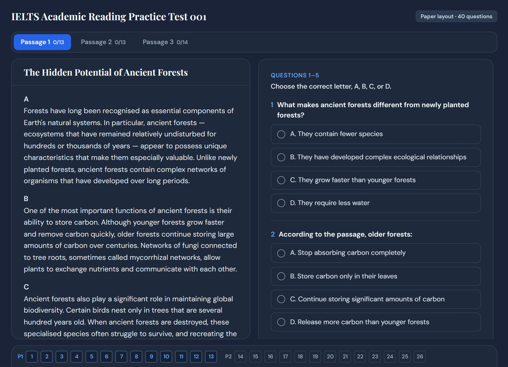
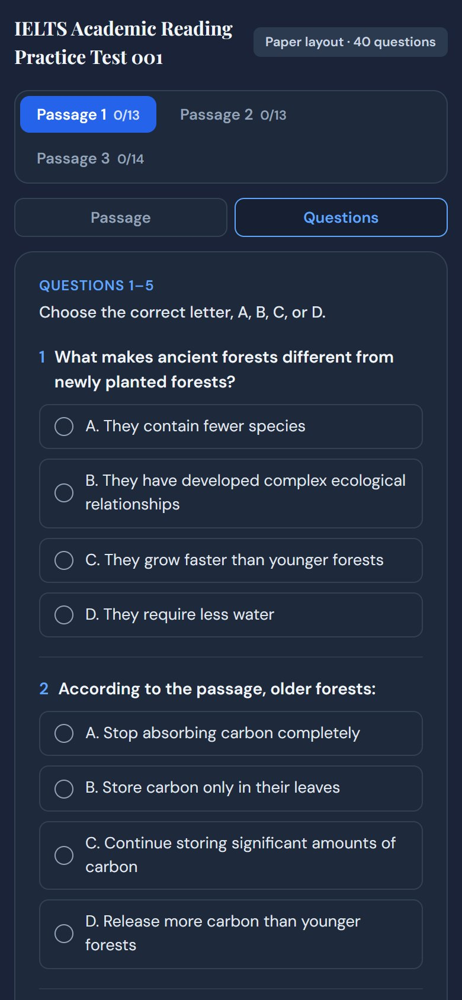
A real IELTS Reading paper, as a student sits it. Click or tap either screen to enlarge.
Browse free and paid courses, and try the preview lessons before paying anything.
Pay with bKash, the mobile wallet students already use. The course opens as soon as the payment is confirmed.
Video, PDF and reading lessons, with progress that follows them from phone to laptop. Nothing is lost if access lapses.
Timed practice tests and full IELTS papers. Answers save as they go, so a dropped connection costs nothing.
Marks or an IELTS band, with a question-by-question review whenever the teacher allows it.
Create and publish courses, put the lessons in order, choose free previews and set the price.
Five question styles and complete IELTS papers, checked by previewing exactly what students will see.
A review queue for bKash payments, with a clock on how long each student has been waiting.
Automatic marking, a queue for written answers, and a recorded reset when a student genuinely needs another try.
Revenue, sales and renewals at a glance, plus announcements and a full record of who changed what.
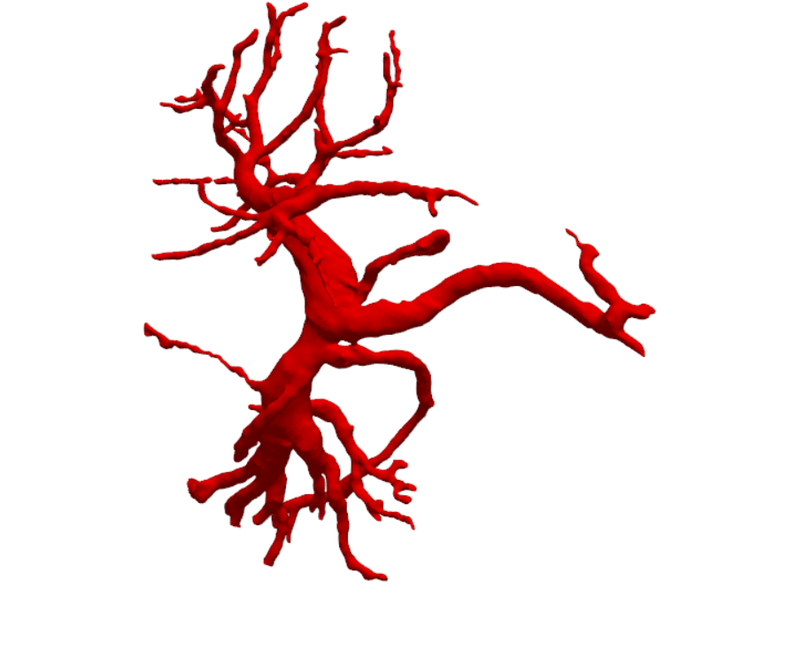
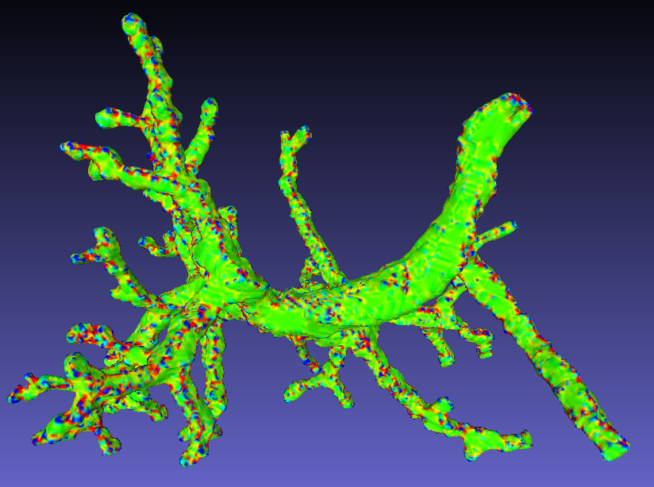
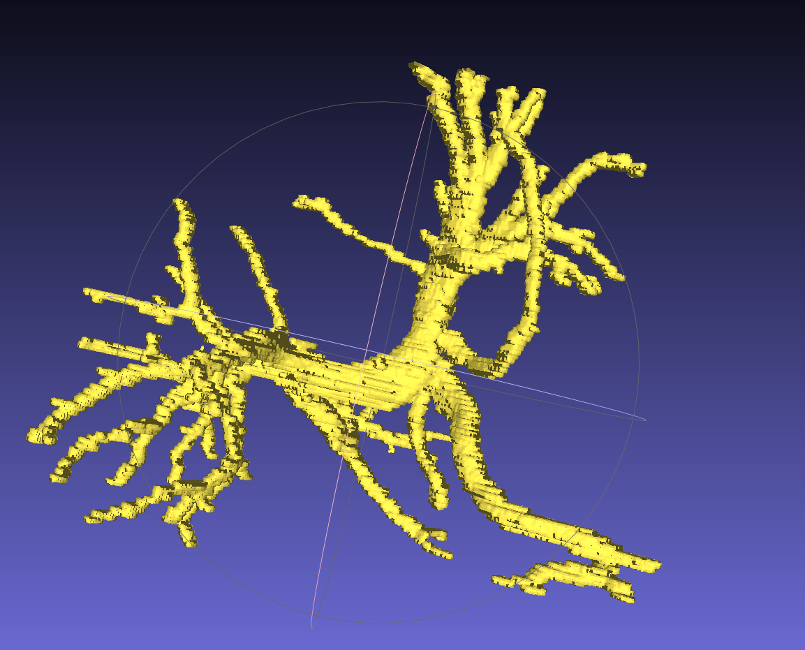
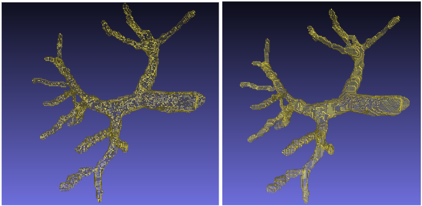
Undergraduate Final Year Dissertation · Computer Vision & 3D Geometry
October 2024 - April 2025
Research-grade 3D reconstruction pipeline for generating accurate, watertight vascular surface meshes from contrast-enhanced CT data. The project evaluates how surface normal estimation and orientation strategies influence reconstruction quality using Screened Poisson Surface Reconstruction.
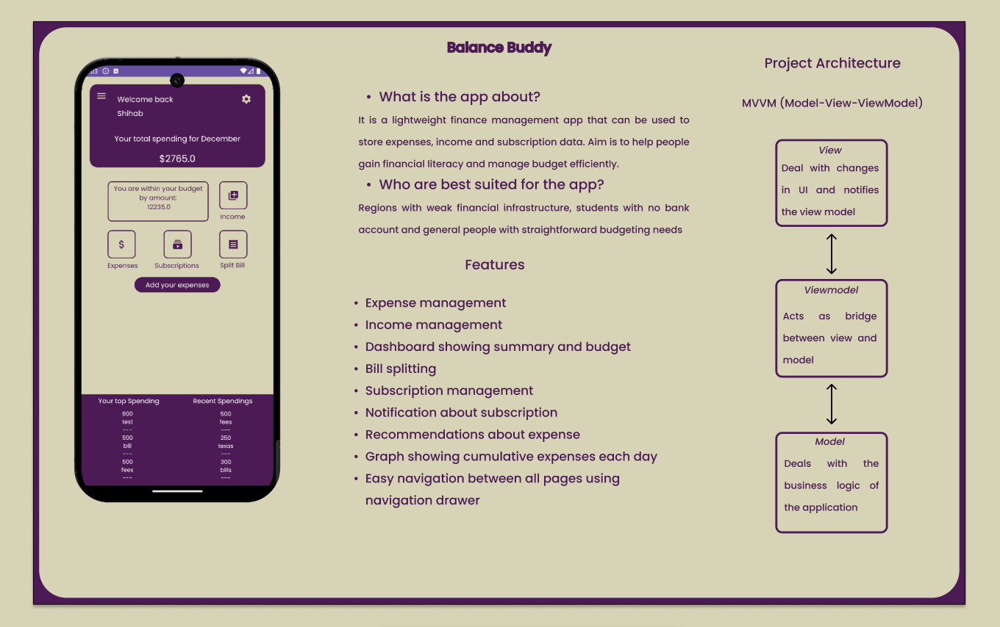
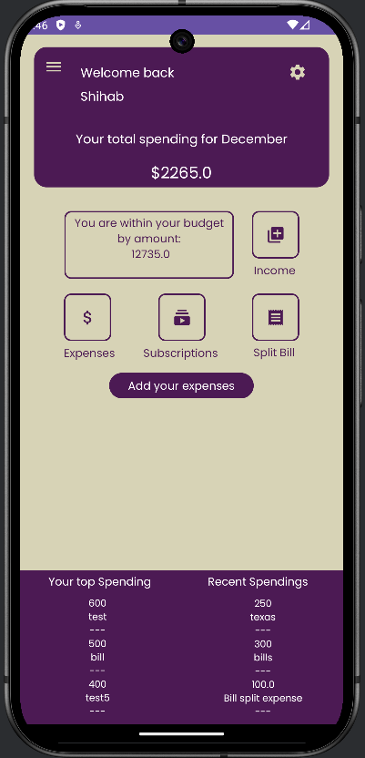
Budget Management Android Application
October 2024 - December 2024
Lightweight Android budgeting application designed for expense tracking, subscription management, and financial insights, with a focus on performance and accessibility in low-resource environments.
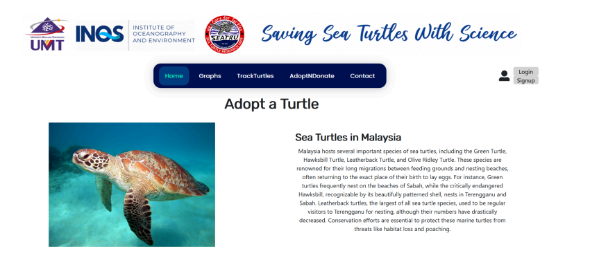
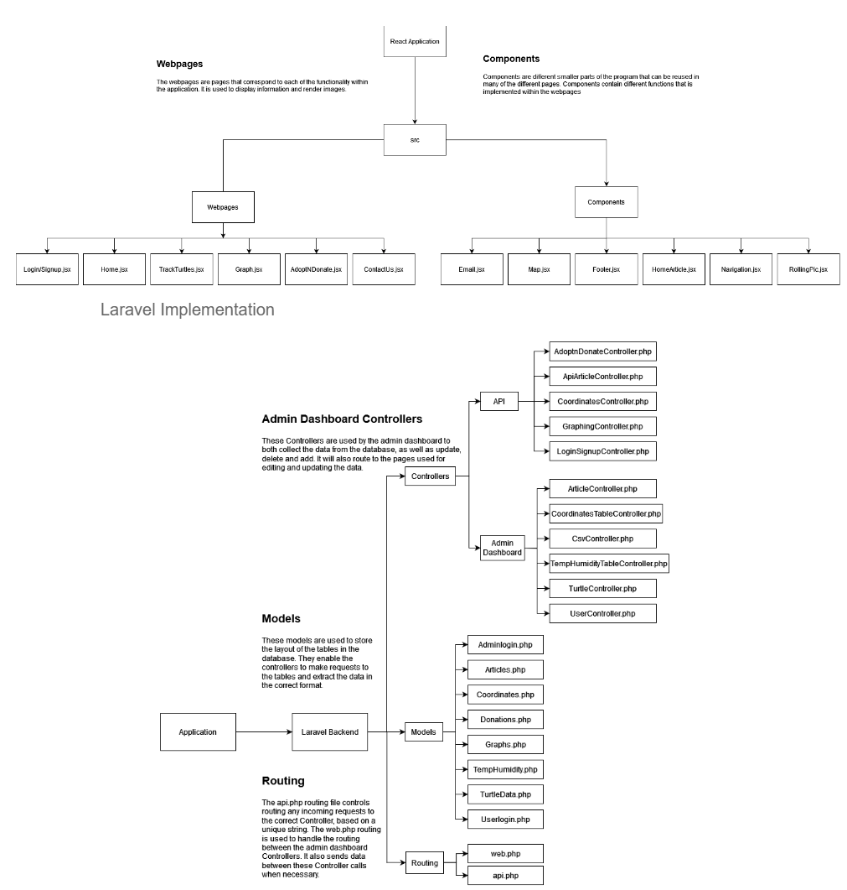
Full-Stack Web Application · Team Project (4 members)
November 2023 - March 2024
Full-stack web platform developed for the Sea Turtle Research Unit (SEATRU), Malaysia, designed to support marine conservation through crowdfunding, public engagement, and transparent tracking of conservation efforts.
Illustration only — not live tracking data.
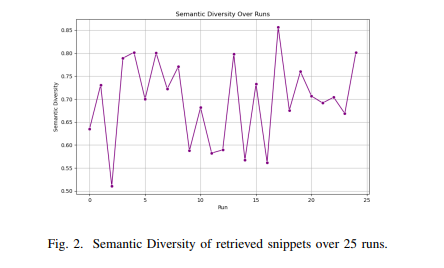
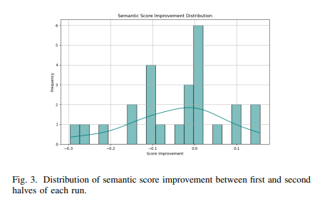
Active Embedding-Based Adaptation · AI Systems Project
February 2025 - April 2025
An AI-powered web crawler that seeks out the most relevant pages on a topic while staying within a fixed budget of pages to visit. Rather than blindly following every link, it uses Sentence-BERT language embeddings to judge how relevant each page and link is, prioritizes the most promising ones, and keeps learning as it crawls to sharpen its judgment. Across 25 test runs it averaged 95% precision, consistently outperforming standard breadth-first and keyword-based crawlers.
Interested in collaboration or have a project in mind? Feel free to reach out!